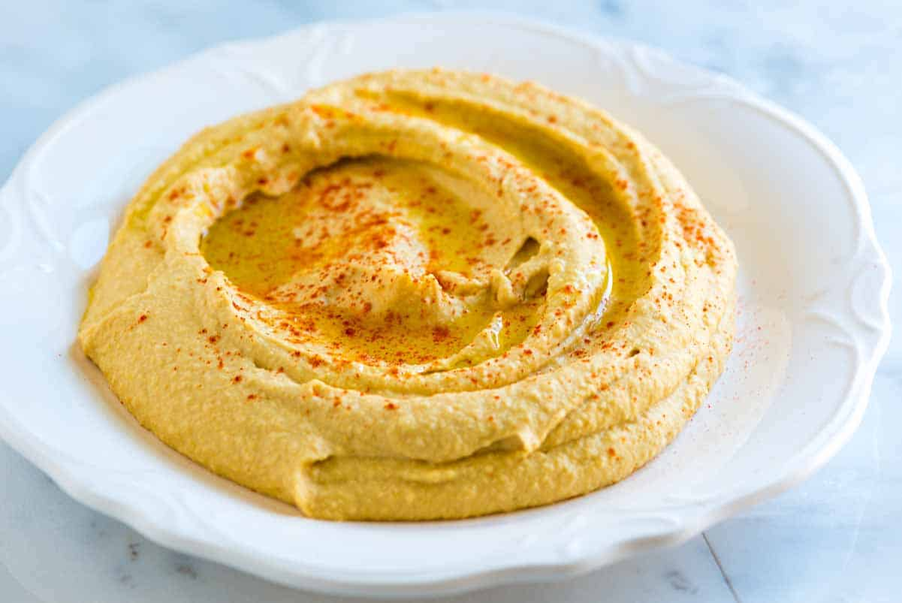

Hummus

Ingredients
- 1 15 ounce can of chickpeas
- 1/4 cup fresh lemon juice
- 1/4 cup tahini
- 1-4 cloves of garlic, minced
- 2 tablespoons EV olive oil
- 1/2 tsp ground cumin
- salt to taste
- 2-3 tablespoons of water
- dash of paprika
Steps
- In the bowl of a food processor, combine the tahini and lemon juice and process for 1 minute, scrape the sides and bottom of the bowl then process for 30 seconds more.
- Add the olive oil, minced garlic, cumin, and a 1/2 teaspoon of salt to the whipped tahini and lemon juice. Process until well blended.
- Open, drain, and rinse the chickpeas. Add half of the chickpeas to the food processor and process until well blended
- Most likely the hummus will be too thick or still have tiny bits of chickpea. To fix this, with the food processor turned on, slowly add 2 to 3 tablespoons of water until you reach the perfect consistency.
- Taste for salt and adjust as needed. Serve hummus with a drizzle of olive oil and dash of paprika. Store homemade hummus in an airtight container and refrigerate up to one week.